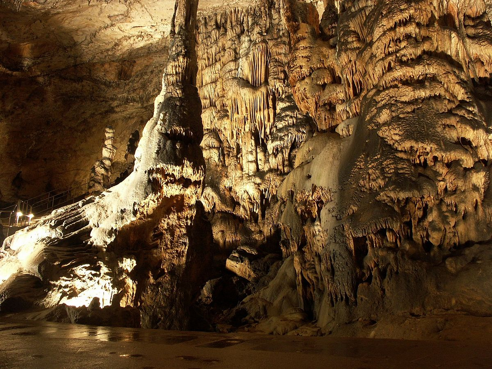

Az Aggteleki- és Szlovák-karszt barlangjai Magyarország és Szlovákia közös világörökségi helyszíne. A két ország határvidékén található kiterjedt területen eddig 712 barlangot tártak fel. A jellegzetes mérsékelt övi karsztrendszerben egy jéggel teli szakadék is található ami, tengerszint feletti magasságát figyelembe véve egyedülálló Európában. A barlangban nagyméretű sztalaktitok és sztalagmitok alakultak ki és több tízmillió év történetét lehet a helyszínen tanulmányozni. Megkövült állatmaradványok (fosszíliák) is előkerültek, és a barlangokban lakó kőkori emberekről is találtak bizonyítékokat. A barlangrendszer egy része látogatható, legfőbb látványosság a Baradla-barlang hatalmas álló és függő cseppköveivel. A második legnagyobb (Béke) barlangot 1965-ben gyógybarlanggá nyilvánították, légzőszervi megbetegedésben szenvedőket gyógyítanak benne. A Szlovák-karszt egyik látványos eleme a Dévényfalvi Szabadság-barlang.
